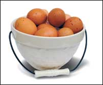
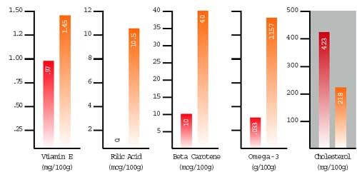

We have just completed testing eggs from four flocks raised on pasture - the results revealed that compared to supermarket eggs from hens raised in cages, our free-range eggs contained only about half as much cholesterol, were up to twice as rich in vitamin E, and were two to six times richer in beta carotene (a form of vitamin A). For essential omega-3 fatty acids (vital for optimal heart and brain function), the free-range eggs averaged four times more than factory eggs.
Our results are summarized below, compared to the official factory-egg nutrient data from the U.S. Department of Agriculture (USDA). (See full details of the test results at www.MotherEarthNews.com/eggs.)
We’re not the first to report data showing that raising hens in cages produces substandard eggs. In 1988, Artemis Simopoulos, co-author of The Omega Diet, found that eggs from pastured hens in Greece contained 13 times more omega-3s than eggs from U.S. supermarkets. In 1974, a British study found that eggs from pastured hens had 50 percent more folic acid and 70 percent more vitamin B12 than eggs from factory-farmed hens. In 1997, a study in Animal Feed Science and Technology found eggs from free-range chickens had higher levels of both omega-3s and vitamin E than those from hens maintained in cages and fed commercial diets. Most recently, in 2003, Pennsylvania State University researchers reported that birds kept on pasture produced three times more omega-3s in their eggs than birds raised in cages on a commercial diet. They also found twice as much vitamin E and 40 percent more vitamin A in the yolks of the pastured birds.
Eggs are not the only instance of declining nutrition and other problems associated with industrial food products: Vitamins and minerals in fruits and vegetables have been declining over the last 50 years (see “Green Gazette,” April/May 2005); and meat and dairy products show lower levels of nutrients in industrial production systems compared to animals raised on pasture (see www.eatwild.com). On the food safety front, grain-fed beef is more likely to be contaminated with toxic E. coli bacteria than meat from pasture-raised animals.
Researching this article, we came across this statement on the Web site of the American Egg Board: “The nutrient content of eggs is not affected by whether hens are raised free-range or in floor or cage operations.”
Because the egg board has a $20 million annual budget and a nutrition advisory committee of seven physicians and professors, one would think we could trust what it says. But when we asked on which studies it had based this statement, the reply was: “We know of no research on nutritional content of eggs laid by hens who ate exactly the same feed in cage, floor or free-range operations. The nutritional content of eggs is affected by feed, not how birds are housed.” The board is clearly trying to deny what the research shows: Hens housed in free-range conditions are able to consume large amounts of grass, clover, weeds and insects in addition to grain. This diverse natural diet makes free-range eggs rich in nutrients, while hens confined in “cage or floor operations” produce substandard eggs.
The egg board represents the producers who raise chickens in confinement. These producers keep their 300 million chickens entirely indoors. The birds never see grass, let alone feed on it. They raise birds in tiny cages where they barely have room to turn around. They routinely “debeak” the hens so they won’t peck each other to death. They withhold food and water to force the birds to molt all at once. The buildings where birds are confined reek of ammonia from the accumulated manure. Many birds die of heart failure.
Most of us are aware the chickens that lay supermarket eggs are not treated well. Now, we have clear evidence of what the egg board doesn’t want us to know: Intensive confinement operations are giving us substandard food. We have asked the board to remove its incorrect claims about the quality of free-range eggs. If you’d like to join us, contact the board via its Web site, www.aeb.org.
To help spread the word about this Real Food issue, we’ve created the “Chicken and Egg Page.” Free-range producers are invited to post nutrient test results for their flocks, and we’ve listed the addresses and prices of the labs we recommend for testing. (We are especially interested in receiving nutrient data on eggs from modern “high-production” breeds raised on pasture, and data on how much less grain birds require when kept on pasture.)
Chickens are fun and easy to keep in your back yard. All they need is protection from predators (many folks use a movable pen) and a few minutes of daily care. If you decide not to produce your own eggs, you probably can find a local free-range source. These eggs may cost more than supermarket eggs, but they’ll give you better flavor, lower cholesterol and higher nutrients. Paying a premium is well worth it when you know that the birds were treated well.
Rejecting substandard food by paying more for quality products is the only thing that will improve our food supply and force producers to treat livestock more humanely.
|
 Supermarket Eggs (per USDA Nutrient Database) |
 |
|